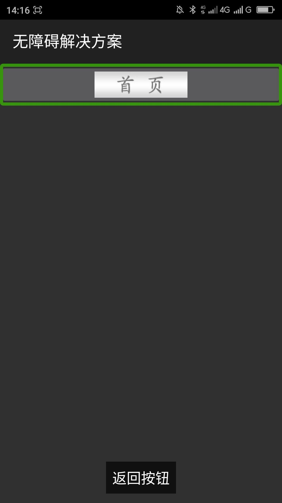

图片中有文本且文本能指示功能、目的的,替代文本尽量使用图片上的文本____20160423
【问题描述】
图片中有文本或文本图片且图片中的文本能指示控件的功能、目的等，提供不是图片上的文本的替代文本，会导致屏幕阅读器用户获取到的信息与普通用户一致。还有可能导致屏幕阅读器用户与普通用户交流出现困难，例如一个图形按钮上面有“首页”两个字，替代文本是：“返回”，实际的功能是打开首页，如果一个屏幕阅读器用户给普通用户说：那个“返回“按钮怎么点击之后没有返回？普通用户会非常疑惑，他会说：上面没有“返回”按钮啊，只有一个“首页”按钮。
【问题解决方案描述】
当图片中有文本或文本图片且文本能指示控件的功能、目的的时候应当把替代文本设置为与显示的图片中的文本一致。这样可以保证屏幕阅读器用户与普通用户获取的信息一致，也就是“所见即所得”。
【前后效果图对比】
 |  |
| 优化前，屏幕阅读器朗读“返回按钮” | 优化后，屏幕阅读器朗读“首页按钮” |